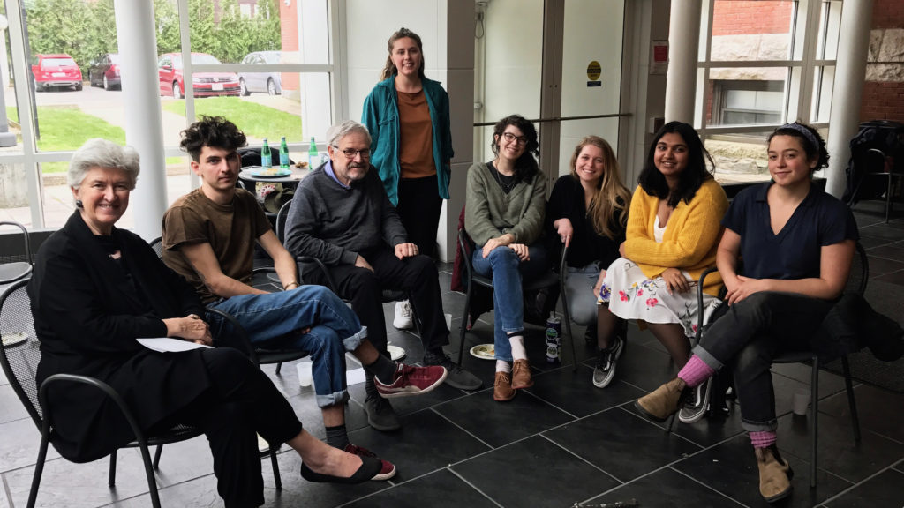
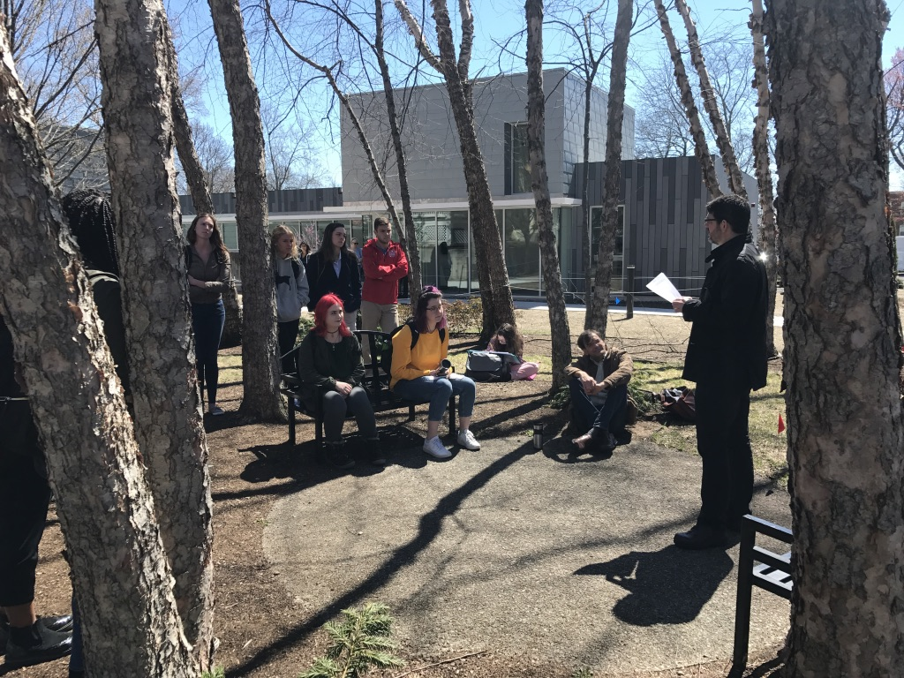

Intentions of NEC
Intention 1: Collaboratives
Collaboratives are a central and distinctive process of the NEC; innovative and interdisciplinary, they create expanding networks of creative exchange on campus. They are question-based, dynamic, and flexible, and embody a flow of reflection, exploration, discernment, visioning and action. They interrupt habitual thinking, engender genuine inquiry and a collective search for insight, and depend on horizontal relationships between faculty and students, and between students.
Collaboratives are different than many courses:
- Horizontal, emergent, open-ended
- Emphasize the co-production of knowledge
- Incorporate immersive nature-based elements
- Engage with NEC public programs
Students in Collaboratives participate in a Council on the Uncertain Human Future, facilitated by a faculty or student trained to lead them. From this foundation, they go on to consider the topic issue of the Collaborative in a Council-like process, allowing the concerns and questions of the group to emerge. After discerning their own curiosities, capabilities and collaborative opportunities, the group conducts research to deepen their resources and understanding; from there, new questions and insights may emerge, and specific projects, actions and collaborations develop.
Collaboratives aim less at mastery of a certain body of knowledge than at reaching a deeper understanding of a significant issue through collective practices of listening, respect, empathy and exploration – cultivating an authentic arc between seeking to know and choosing to act.
Intention 2: Affiliated Courses and First Year Intensives (FYIs)
Clark has great strength in faculty research and teaching related to issues of environment, climate and social justice; there are a wide range of existing courses and research projects in related areas. In affiliated courses and FYIs, students are encouraged to reflect about how climate change is related to the course subject; they attend public NEC events, and they participate in Listening in Nature(LIN) activities on campus. Some courses may also include a Council for the Uncertain Human Future.
Intention 3: Listening in Nature
Listening in Nature events and activities invite the Clark community to slow down, listen, become observant and available, and awaken to the magic of living ecosystems. Listening in Nature cultivates appreciation of the natural world and awareness of our interdependence.
Listening in Nature practices take several forms:
- Ongoing campus experiences offered weekly
- Outdoor experiences that are integrated into Clark courses
- Campus-wide days of Listening in Nature
- Half-day and overnight experiences off campus
Intention 4: Public Programs
Each semester the NEC hosts innovative events and conversations. These events deepen community awareness and sustain interest and involvement among the faculty, staff, and students. They allow students in NEC affiliated courses to join a broader, conversation about the challenges we face as a university community, and to think about how we might marshal diverse perspectives and creative thinking as we consider how we wish to live now for the world we want to see. NEC events also offer an opportunity for Clark faculty, students, and staff to pursue these lines of inquiry with community partners and visionaries from around the country.
View our upcoming events.